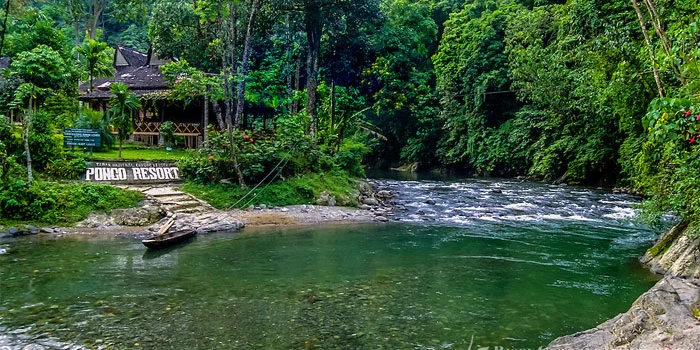

Pantai dengan pasir berwarna merah muda yang langka, dipadukan dengan air laut yang jernih dan terumbu karang yang indah. Sangat cocok untuk berenang dan snorkeling.
Fasilitas yang tersedia:
Penyewaan alat snorkeling dan diving
Penyewaan kapal cepat (speedboat)
Pemandu wisata lokal (Ranger)
Area istirahat pinggir pantai

Bukit Lawang, Sumatera Utara
Kawasan ekowisata di pinggiran Taman Nasional Gunung Leuser. Terkenal dengan aliran sungai Bahorok yang deras dan pusat pengamatan Orangutan Sumatera di habitat aslinya.